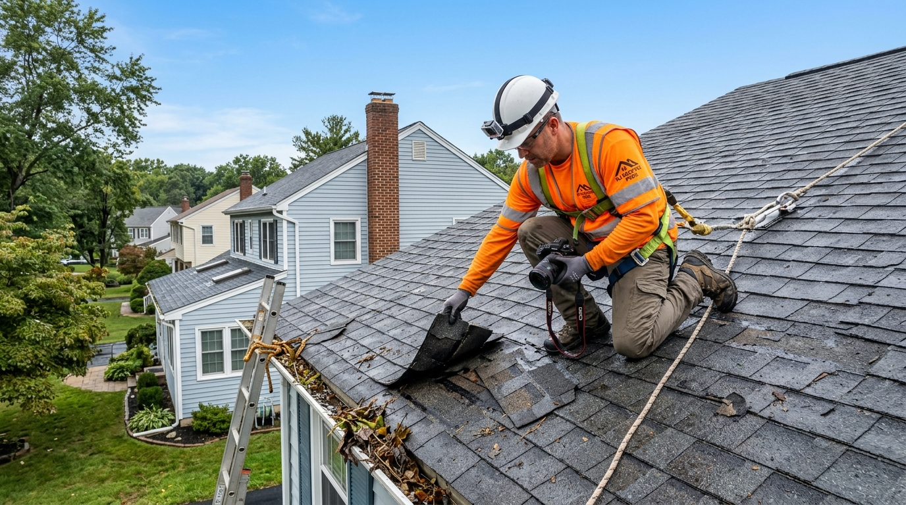

Key Takeaways for Homeowners
- Safety Above All: Never climb onto a wet roof after a storm. Inspect from the ground using binoculars, check downspout runoff, and examine the underside of your roof from inside the attic.
- Look for Collateral Clues: Dented outdoor A/C compressor fins, chipped paint on deck railings, and dented gutters are clear proof of hail impact that insurance adjusters look for.
- Wind Creasing vs. Missing Shingles: Shingles do not need to blow off completely to fail. High winds often break the thermal adhesive seal, lifting tabs and creasing the fiberglass mat.
- Mitigate Immediately: Homeowners have a contractual responsibility under NJ insurance policies to mitigate active water intrusion. Prompt emergency tarping protects your claim eligibility.
- Timestamped Documentation: Photograph all damage, debris in the yard, and hail stones next to a coin or ruler before clearing anything away.

Quick Answer: The 5-Minute Post-Storm Inspection Order
Immediately after severe weather passes, perform this 5-stage check:
- Perimeter Ground Walk: Walk your property perimeter with binoculars to spot missing shingles, flipped ridge caps, or bent flashing along roof edges.
- Downspout Discharge Check: Look for heavy accumulations of asphalt granules washed down into splash blocks, which indicates severe wind scouring or hail impact.
- Ground-Level Collateral Check: Inspect aluminum gutters, metal siding, window screens, and outdoor air conditioning units for round impact dents.
- Attic Interior Flashlight Scan: Enter the attic during daylight to look for damp roof decking, wet fiberglass insulation, or sunlight peeking through ventilation penetrations.
- Top-Floor Ceiling Scan: Check drywall ceilings and corners around light fixtures and fans for new brown water rings or bubbling paint.
Why You Should Never Climb on Your Roof After a Storm
Safety Note: Leave Roof Access to Certified Professionals
According to the U.S. Consumer Product Safety Commission, ladder falls and roof slips account for over 160,000 emergency room visits annually. Following a storm, roofing surfaces are slick with rainwater, algae slime, and loose mineral granules that act like ball bearings under shoe soles. Additionally, fallen tree limbs can fracture underlying rafters, creating concealed structural collapses. Keep your feet firmly on the ground and conduct all visual assessments safely.
Detailed 5-Point Homeowner Storm Checklist
Step 1: Ground-Level Exterior Perimeter Scan
Step back across your lawn or across the street where you have a clear, angled view of each roof plane. Using binoculars or your smartphone camera on 5x zoom, look for:
- Missing Shingles: Dark rectangular gaps where shingles have torn away, exposing the gray synthetic underlayment or black tar paper beneath.
- Lifted or Folded Tabs: Shingles that appear raised or curled at an angle. High wind gusts often pop adhesive sealant strips and fold the shingles backward, snapping the fiberglass core.
- Dislodged Ridge Caps: The topmost horizontal peak shingles are directly exposed to crosswinds. If ridge vents or caps peel loose, wind-driven rain penetrates straight into the attic.
- Dangling Shingle Pieces: Shingle fragments stuck in gutters, lodged in shrubs, or scattered across the lawn.
Step 2: Downspouts and Gutters
Your gutter drainage system acts as an early warning indicator for shingle distress:
- Granule Washes: Shingles are surfaced with ceramic-coated mineral granules that shield the asphalt from ultraviolet degradation. When hail strikes or extreme wind scours a roof, granules loosen and wash into downspouts. Heavy dark silt in splash blocks indicates significant protective loss.
- Gutter Dents and Separation: Look for sagging gutter troughs, pulled spikes, or separation from the fascia board caused by wind buffeting or heavy water weight.
Step 3: Collateral Damage Clues
Insurance adjusters inspect your entire property for collateral signs to verify whether a localized storm produced hail or high-velocity microburst winds:
- Air Conditioning Compressor: Check the thin aluminum cooling fins on your outdoor condenser. Circular indentation dings confirm hail impacts.
- Window Screens & Siding: Look for tears or small dimples in insect screens, splatters on painted fences, and cracks along vinyl siding trim.
- Metal Mailboxes & Vent Caps: Pitted metal tops on mailboxes, outdoor light fixtures, or aluminum trim wrap confirm hail size.
Step 4: Attic Underside Inspection
The underside of your roof deck reveals leaks hours or days before water saturates ceiling drywall:
- Take a high-power flashlight into your attic during daytime hours.
- Scan the underside of the plywood decking and rafters, particularly around chimneys, skylights, plumbing vent pipes, and roof valleys.
- Look for damp dark streaks, active drips, water-stained insulation, or pinpricks of daylight showing through sheathing seams.
Step 5: Interior Living Space Scan
Water rarely travels in a straight line; it runs along sloping rafters before finding drywall penetrations. Check:
- Ceiling drywall beneath low roof valleys and dormers for faint yellowish or brown stains.
- Paint bubbling, peeling drywall tape, or sagging sheetrock seams.
- Moisture stains around recessed ceiling lights, bathroom exhaust vents, and ceiling fan canopies.
If severe storm rainfall has actively soaked ceiling drywall, attic insulation, or subflooring, engaging professional water damage restoration specialists alongside your emergency roofing crew is vital to extract trapped water, deploy commercial air movers, and sanitize framing before hazardous mold spores develop.
Suspect Storm Damage or Have an Active Leak?
Our emergency roofing crew provides rapid on-site storm inspections, temporary waterproof tarping, and detailed photo documentation for your insurance adjuster.
How to Handle New Jersey Storm Damage Insurance Claims
Navigating insurance claims after severe weather requires systematic documentation. Follow these practical steps:
| Step | Action Required | Critical Homeowner Caution |
|---|---|---|
| 1. Document Date of Loss | Record the exact date, approximate time, and meteorological conditions (hail size, wind speed gusts recorded by NOAA or local news). | Insurance adjusters verify weather bureau records; inaccurate dates delay claims. |
| 2. Take Timestamped Photos | Capture wide-angle yard photos, close-ups of fallen shingles, hail next to a coin, and interior water stains. | Never discard blown-off shingles or damaged materials until the adjuster inspects them. |
| 3. Mitigate Active Leaks | Hire a licensed contractor to install heavy-duty emergency tarping over exposed roof decks. | Keep all emergency invoices; insurance reimburses reasonable mitigation costs under policy duties. |
| 4. Request a Professional Inspection | Have a reputable local roofing contractor inspect and measure the roof before the adjuster arrives. | Beware out-of-state "storm chaser" crews going door-to-door demanding upfront contingency contracts. |
| 5. Attend the Adjuster Meeting | Have your roofing contractor present during the adjuster's physical walkthrough to review damaged slopes together. | Ensure all damaged valleys, flashing, and gutter components are included in the scope of loss. |
How to Avoid Out-of-State "Storm Chasers"
Following major storm events in Central New Jersey, out-of-state crews frequently travel into Somerset County neighborhoods offering "free roofs" and pressuring homeowners into signing binding assignment-of-benefits forms.
Protect yourself by verifying these essential credentials:
- New Jersey HIC License: Must have an active New Jersey Division of Consumer Affairs Home Improvement Contractor registration (e.g., #13VH...).
- Permanent Local Address: Work with an established contractor with a verifiable physical headquarters in or near Somerset County, not a P.O. Box or temporary out-of-state phone number.
- Manufacturer Certifications: Ensure the installer is certified by GAF, Owens Corning, or CertainTeed, guaranteeing valid manufacturer system warranties.
- No High-Pressure Door Knocking: Legitimate local contractors do not demand that you sign over your insurance check before providing an itemized proposal.
Sources & Authoritative References
- National Oceanic and Atmospheric Administration (NOAA): Storm Events Database — Somerset County Wind and Hail Records.
- Insurance Institute for Business & Home Safety (IBHS): Wind & Hail Damage Assessment Protocols for Asphalt Shingle Roofs.
- Federal Emergency Management Agency (FEMA): Homeowner Guide to Post-Storm Property Mitigation.
- Occupational Safety and Health Administration (OSHA): Standard 1926.501 — Duty to Have Fall Protection in Residential Construction.
- New Jersey Department of Banking and Insurance (DOBI): Homeowners Insurance Storm Claims Consumer Bill of Rights.
Dave Collins inspected and approved this guide on September 24, 2026, confirming all safety procedures, FEMA guidelines, and insurance claim practices adhere to current New Jersey standards.
Frequently Asked Questions
No. Never walk on a roof immediately following a storm. Wet shingles are extremely slippery, hidden deck rot or compromised trusses can give way under foot, and power lines or broken branches present severe hazards. Use binoculars from ground level and inspect your attic interior instead.
Hail damage on asphalt shingles appears as dark, circular dimples or indentations where protective mineral granules have been knocked away, exposing the black asphalt substrate or fiberglass matting. On aluminum gutters and siding, hail leaves distinct round dents.
Most New Jersey homeowners insurance policies require policyholders to file claims within one year of the documented 'Date of Loss.' However, insurance companies strongly favor claims filed promptly within 30 to 60 days following the storm event.
Yes. Most standard homeowners policies include coverage for reasonable emergency mitigation expenses under the 'Duties After Loss' clause. In fact, homeowners have a legal contractual duty to prevent ongoing water damage by installing protective tarps immediately.
Even three or four missing shingles expose the underlying felt paper and roof sheathing to direct rainfall. Water easily seeps around exposed nail penetrations and rots the plywood deck. Prompt targeted shingle repair prevents thousands in structural interior water restoration.